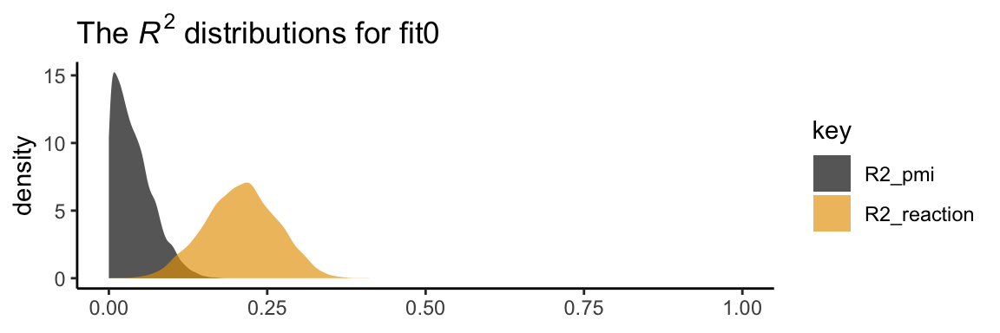
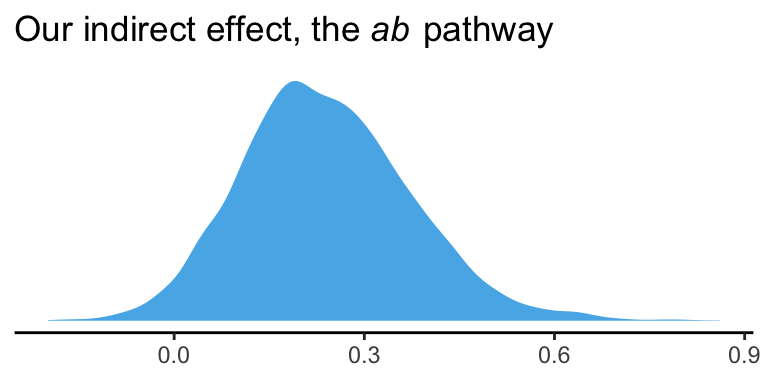

3.2 Example with dichotomous \(X\): The influence of presumed media influence
Here we load a couple necessary packages, load the data, and take a peek at them.
library(tidyverse)
pmi <- read_csv("data/pmi/pmi.csv")
glimpse(pmi)## Observations: 123
## Variables: 6
## $ cond <int> 1, 0, 1, 0, 0, 0, 0, 1, 0, 0, 1, 0, 1, 0, 1, 1, 0, 0, 1, 0, 1, 1, 1, 1, 1, 0, 1, 0, 1, 0...
## $ pmi <dbl> 7.0, 6.0, 5.5, 6.5, 6.0, 5.5, 3.5, 6.0, 4.5, 7.0, 1.0, 6.0, 5.0, 7.0, 7.0, 7.0, 4.5, 3.5...
## $ import <int> 6, 1, 6, 6, 5, 1, 1, 6, 6, 6, 3, 3, 4, 7, 1, 6, 3, 3, 2, 4, 4, 6, 7, 4, 5, 4, 6, 5, 5, 7...
## $ reaction <dbl> 5.25, 1.25, 5.00, 2.75, 2.50, 1.25, 1.50, 4.75, 4.25, 6.25, 1.25, 2.75, 3.75, 5.00, 4.00...
## $ gender <int> 1, 1, 1, 0, 1, 1, 0, 1, 1, 1, 0, 0, 0, 0, 0, 0, 0, 0, 0, 1, 0, 0, 1, 1, 0, 1, 0, 0, 0, 1...
## $ age <dbl> 51.0, 40.0, 26.0, 21.0, 27.0, 25.0, 23.0, 25.0, 22.0, 24.0, 22.0, 21.0, 23.0, 21.0, 22.0...You can get the male/female split like so:
pmi %>%
group_by(gender) %>%
count()## # A tibble: 2 x 2
## # Groups: gender [2]
## gender n
## <int> <int>
## 1 0 80
## 2 1 43Here is the split by condition:
pmi %>%
group_by(cond) %>%
count()## # A tibble: 2 x 2
## # Groups: cond [2]
## cond n
## <int> <int>
## 1 0 65
## 2 1 58Here is how to get the ungrouped mean and \(SD\) values for reaction and pmi, as presented in Table 3.1,
pmi %>%
select(reaction, pmi) %>%
gather() %>%
group_by(key) %>%
summarise(mean = mean(value),
sd = sd(value)) %>%
mutate_if(is.double, round, digits = 3)## # A tibble: 2 x 3
## key mean sd
## <chr> <dbl> <dbl>
## 1 pmi 5.60 1.32
## 2 reaction 3.48 1.55You might get the mean and \(SD\) values for reaction and pmi grouped by cond like this:
pmi %>%
select(reaction, pmi, cond) %>%
gather(key, value, -cond) %>%
group_by(cond, key) %>%
summarise(mean = mean(value),
sd = sd(value)) %>%
mutate_if(is.double, round, digits = 3)## # A tibble: 4 x 4
## # Groups: cond [2]
## cond key mean sd
## <int> <chr> <dbl> <dbl>
## 1 0 pmi 5.38 1.34
## 2 0 reaction 3.25 1.61
## 3 1 pmi 5.85 1.27
## 4 1 reaction 3.75 1.45Let’s load our primary statistical package.
library(brms)Before we begin, I should acknowledge that I greatly benefited by this great blog post on path analysis in brms by Jarrett Byrnes. In brms, we handle mediation models using the multivariate syntax. There are a few ways to do this. Let’s start simple.
If you look at the path model in Figure 3.3, you’ll note that reaction is predicted by pmi and cond. pmi, in turn, is predicted solely by cond. So we have two regression models, which is just the kind of thing the brms multivariate syntax is for. So first let’s specify both models, which we’ll nest in bf() functions and save as objects.
y_model <- bf(reaction ~ 1 + pmi + cond)
m_model <- bf(pmi ~ 1 + cond)Now we have our bf() objects in hand, we’ll combine them with the + operator within the brm() function. We’ll also specify set_rescor(FALSE)–we’re not interested in adding a residual correlation between reaction and pmi.
model1 <-
brm(data = pmi, family = gaussian,
y_model + m_model + set_rescor(FALSE),
chains = 4, cores = 4)Here are our results.
print(model1)## Family: MV(gaussian, gaussian)
## Links: mu = identity; sigma = identity
## mu = identity; sigma = identity
## Formula: reaction ~ 1 + pmi + cond
## pmi ~ 1 + cond
## Data: pmi (Number of observations: 123)
## Samples: 4 chains, each with iter = 2000; warmup = 1000; thin = 1;
## total post-warmup samples = 4000
##
## Population-Level Effects:
## Estimate Est.Error l-95% CI u-95% CI Eff.Sample Rhat
## reaction_Intercept 0.53 0.55 -0.56 1.65 4000 1.00
## pmi_Intercept 5.38 0.17 5.06 5.70 4000 1.00
## reaction_pmi 0.50 0.10 0.31 0.70 4000 1.00
## reaction_cond 0.26 0.25 -0.24 0.75 4000 1.00
## pmi_cond 0.47 0.24 -0.01 0.94 4000 1.00
##
## Family Specific Parameters:
## Estimate Est.Error l-95% CI u-95% CI Eff.Sample Rhat
## sigma_reaction 1.41 0.09 1.24 1.60 4000 1.00
## sigma_pmi 1.32 0.09 1.16 1.50 4000 1.00
##
## Samples were drawn using sampling(NUTS). For each parameter, Eff.Sample
## is a crude measure of effective sample size, and Rhat is the potential
## scale reduction factor on split chains (at convergence, Rhat = 1).If you compare our model summary with the coefficients in the path model in Figure 3.3, you’ll see our coefficients are the same. The brms summary also includes intercepts and residual variances, which are typically omitted in path diagrams even though they’re still part of the model.
If you’re getting lost in all the model output, try this.
fixef(model1)[3:5, ] %>% round(digits = 3)## Estimate Est.Error Q2.5 Q97.5
## reaction_pmi 0.504 0.098 0.309 0.697
## reaction_cond 0.257 0.252 -0.243 0.748
## pmi_cond 0.474 0.240 -0.005 0.936Also note that Hayes tends to refer to the intercepts as constants.
In his Table 3.2, Hayes included the \(R^2\) values. Here are ours.
bayes_R2(model1) %>% round(digits = 3)## Estimate Est.Error Q2.5 Q97.5
## R2_reaction 0.208 0.056 0.099 0.315
## R2_pmi 0.039 0.031 0.000 0.112It’s worth it to actually plot the \(R^2\) distributions.
# we'll get our color palette from ggthemes
library(ggthemes)
bayes_R2(model1, summary = F) %>%
as_tibble() %>%
gather() %>%
ggplot(aes(x = value, fill = key)) +
geom_density(color = "transparent", alpha = 2/3) +
scale_fill_colorblind() + # we got this color palette from the ggthemes package
coord_cartesian(xlim = 0:1) +
labs(title = expression(paste("The ", italic("R")^{2}, " distributions for fit0")),
x = NULL) +
theme_classic()
We went through the trouble of plotting the \(R^2\) distributions because it’s useful to understand that they won’t often be symmetric when they’re near their logical boundaries (i.e., 0 and 1). This is where asymmetric Bayesian credible intervals can really shine.
Let’s get down to business and examine the indirect effect, the \(ab\) pathway. In our model:
- \(a\) =
pmi_cond - \(b\) =
reaction_pmi
You can isolate them with fixef()[i].
fixef(model1)[5 , ]## Estimate Est.Error Q2.5 Q97.5
## 0.474456456 0.240391424 -0.005044517 0.936437859fixef(model1)[3 , ]## Estimate Est.Error Q2.5 Q97.5
## 0.50449451 0.09774672 0.30939585 0.69683689So the naive approach would be to just multiply them.
(fixef(model1)[5 , ] * fixef(model1)[3 , ]) %>% round(digits = 3)## Estimate Est.Error Q2.5 Q97.5
## 0.239 0.023 -0.002 0.653Now, this does get us the correct ‘Estimate’ (i.e., posterior mean). However, the posterior \(SD\) and 95% intervals are off. If you want to do this properly, you need to work with the poster samples themselves. Here they are:
post <- posterior_samples(model1)
glimpse(post)## Observations: 4,000
## Variables: 8
## $ b_reaction_Intercept <dbl> 1.950176626, -0.642275060, 1.756071145, -0.528590500, 0.965722944, -0.381105...
## $ b_pmi_Intercept <dbl> 5.463846, 5.387659, 5.209249, 5.235493, 5.224044, 5.177939, 5.354357, 5.3499...
## $ b_reaction_pmi <dbl> 0.2303314, 0.7141880, 0.2955409, 0.5939846, 0.4863486, 0.6712376, 0.5585035,...
## $ b_reaction_cond <dbl> 0.568063017, 0.144055063, 0.335846731, 0.938714819, -0.041544801, 0.00300684...
## $ b_pmi_cond <dbl> 0.410513415, 0.341716877, 0.771462188, 0.557731830, 0.479940454, 0.862242164...
## $ sigma_reaction <dbl> 1.518972, 1.323994, 1.485331, 1.345070, 1.484862, 1.509208, 1.210915, 1.6082...
## $ sigma_pmi <dbl> 1.414180, 1.229791, 1.421680, 1.252101, 1.506832, 1.322447, 1.276929, 1.3284...
## $ lp__ <dbl> -436.9322, -434.8615, -435.8168, -438.9417, -436.6032, -435.2722, -435.1702,...Here we compute the indirect effect, ab.
post <-
post %>%
mutate(ab = b_pmi_cond*b_reaction_pmi)Now we have ab as a properly computed vector, we can summarize it with the quantile() function.
quantile(post$ab, probs = c(.5, .025, .975)) %>%
round(digits = 3)## 50% 2.5% 97.5%
## 0.232 -0.003 0.522And we can even visualize it as a density.
post %>%
ggplot(aes(x = ab)) +
geom_density(color = "transparent",
fill = colorblind_pal()(3)[3]) +
scale_y_continuous(NULL, breaks = NULL) +
labs(title = expression(paste("Our indirect effect, the ", italic("ab"), " pathway")),
x = NULL) +
theme_classic()
It’s also worth pointing out that as the indirect effect isn’t perfectly symmetric, its mean and median aren’t quite the same.
post %>%
summarize(mean = mean(ab),
median = median(ab)) %>%
round(digits = 3)## mean median
## 1 0.24 0.232Their magnitudes are similar, but this asymmetry will be a source of contrast to our estimates and those in the text. This is also something to consider when reporting on central tendency. When the indirect effect–or any other parameter, for that matter–is quite asymmetric, you might prefer reporting the median rather than the mean.
On page 90, Hayes computed the adjusted means for \(Y\). For both cond == 1 and cond == 0, he computed the expected values for reaction when pmi was at its mean. A natural way to do that in brms is with fitted(). First we’ll put our input values for cond and pmi in a tibble, which we’ll call nd. Then we’ll feed nd into the newdata argument within the fitted() function.
nd <-
tibble(cond = 1:0,
pmi = mean(pmi$pmi))
fitted(model1, newdata = nd)## , , reaction
##
## Estimate Est.Error Q2.5 Q97.5
## [1,] 3.615537 0.1873641 3.247219 3.985118
## [2,] 3.358847 0.1752851 3.009573 3.697929
##
## , , pmi
##
## Estimate Est.Error Q2.5 Q97.5
## [1,] 5.852410 0.1736779 5.506716 6.195187
## [2,] 5.377954 0.1681786 5.056328 5.695418Because model1 is a multivariate model, fitted() returns the model-implied summaries for both reaction and pmi. If you just want the adjusted means for reaction, you can use the resp argument within fitted().
fitted(model1, newdata = nd, resp = "reaction") %>% round(digits = 3)## Estimate Est.Error Q2.5 Q97.5
## [1,] 3.616 0.187 3.247 3.985
## [2,] 3.359 0.175 3.010 3.698Note how this is where the two values in the \(Y\) adjusted column in Table 3.1 came from.
However, if we want to reproduce how Hayes computed the total effect (i.e., \(c'\) + \(ab\)), we’ll need to work with the posterior itself, post. Recall, we’ve already saved the indirect effect as a vector, ab. The direct effect, \(c'\), is labeled b_reaction_cond within post. in order to get the total effect, \(c\), all we need to is add those vectors together.
post <-
post %>%
mutate(total_effect = b_reaction_cond + ab)Here’s the posterior mean with its 95% intervals
post %>%
summarize(mean = mean(total_effect),
ll = quantile(total_effect, prob = .025),
ul = quantile(total_effect, prob = .975))## mean ll ul
## 1 0.4967976 -0.03600994 1.0245483.2.1 Estimation of the model in PROCESS for SPSS and SAS.
Nothing new for us, here.